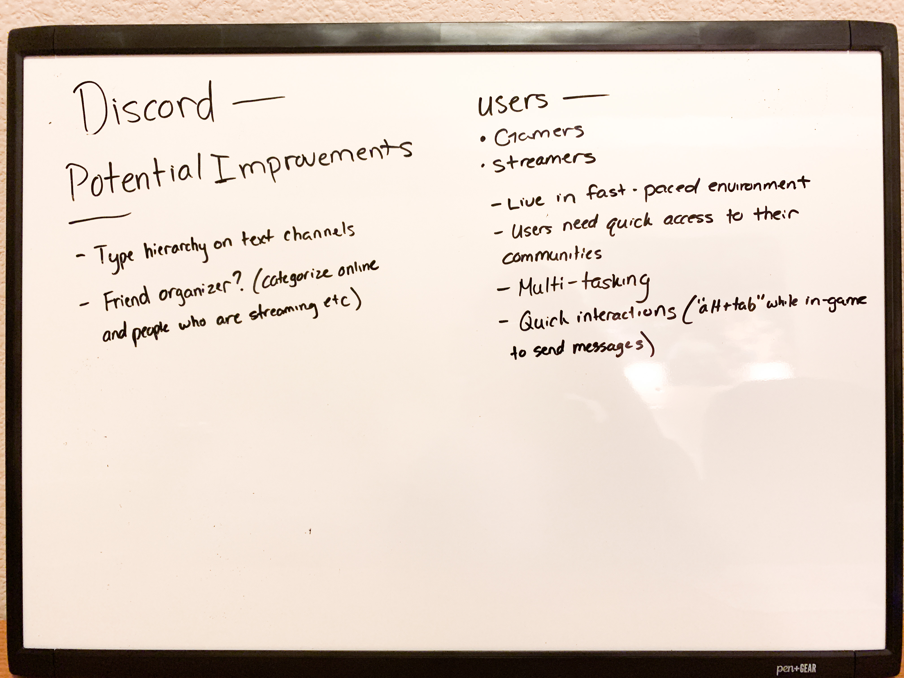
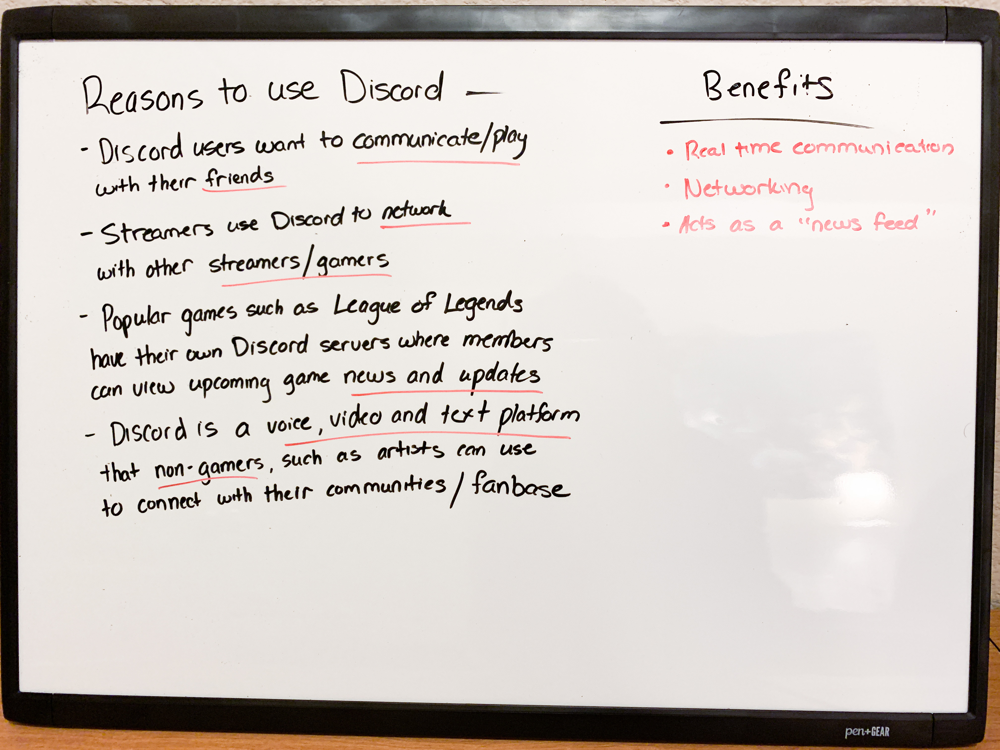

Touching Up on Discord's Features
A UX case study on organizing the friends list and server channels
A UX case study on organizing the friends list and server channels

Having access to all the games that you and your friends play and the
gaming communities you’re a part of, is a lot of information found in
one place. In addition, when one creates a Discord server, they can
customize the text of their channels and setting categories for what
role each member has in the community. All of this can cause information
overload and lead to a lack of visual hierarchy.
Having this in mind, I saw an opportunity to add touches to Discord’s
features that I believe could potentially improve user experience.
Discord is a voice, video and text platform that was designed to allow
gamers to connect with one another. Users can join and create their
own servers where they can interact with multiple communities in a
matter of a few clicks.
Now, non-gaming communities are taking advantage of Discord’s
services to connect with their networks.
If you’re a gamer, you will know that gamers live in a fast-paced environment. They have quick access to everything they need and if one thinks about it, gaming is a great example of user experience. Gamers don’t have to think about the location of the platforms they use and the sooner they can move from A to B, the happier they will be. They are so accustomed to having access to everything so quickly, that anything that will cause poor user experience, such as a sudden disconnection, can make a gamer rage.
I mentioned the general purpose of Discord, but let’s dig deeper
on some of the reasons why gamers use this platform.
I wrote my research and potential ideas onto a whiteboard.


• Communication
• Friends
• Network
• Gamers/streamers
• News and updates
• Voice, video and text platform
• Non-gamer communities
• Real time communication
• Networking
• Can act as a news feed
The pain point is visual hierarchy. With a copious amount of text placed around the app, some features lack breathing room and that can make the user think everything is cluttered and unorganized.
After studying Discord’s current version as of March 10, 2020, I saw an opportunity to tweak the typography of the channel section found in a server and adding categories on the “online friends” tab to help organize the user’s friends list.
The creator of a server has the freedom to customize their channels. They can add multiple channels and even add emojis as an aesthetic. However, this could lead to information overload. For example, I asked a friend if I could feature sections of their Discord onto this case study.
On the image to the left, you can see that emojis are paired
with a list of text. One problem here is that the point size
of the channel headers (highlighted in red) are smaller than
the chat logs. Also, adding emojis can make it harder for the
user to figure out what needs to be read first.
Looking at the text from a distance, you can see that there
isn’t enough contrast in the typography and the user may struggle
on what needs to be read first.
Getting rid of the channel headers and leaving a list of channel
logs won’t help the problem with the hierarchy.
The online tab shows all the user’s friends that are currently
on the app regardless of their appearance status. Next, is the “all”
tab that shows a full list of a user’s friends, both online and
offline. Finally, the “pending,” “blocked” and “add a friend” tabs
are self-explanatory.
I asked four Discord users on what tab on the friends list they
are usually on and they responded with the “online” tab. I took
that into account to see what solution I could develop to help
organize the friends list.

Looking at the current design of the “online” friends, it indicates a list of all current friends in alphabetical order according to the current username. In addition, you can see that each friend has their current activity shown. I had an idea to create categories to show which friends were streaming, in-game and online. I believed that organizing the list in three categories could help the user see what specific activities their friends are engaged in without scrolling through a long list.
After developing my ideas from the research, I began sketching out solutions to the typography and hierarchy.

After sketching I began tweaking the typography of the server channels.
I wanted to add contrast with the channel headers and its contents.
Channel headers were set to 36 pt size, bold and an off-white color.
For the channels, the text was set to 32 pt size, regular and a
darker gray. Finally, channels that have activity would be set to
bold and pure white. By doing this, the hierarchy would follow:
• First - channel headers
• Second - active channels
• Third - inactive channels
Instead of scrolling through a long list of your friends and what they are doing, I believe that categorizing online friends based on specific activities would be beneficial to the user by giving the eyes more breathing room and organization.
After I applied the changes, I had four Discord users compare the original design and my tweaks. Thankfully, all four users liked my concept and would want to see it applied to the app.
Before I did this study, I've always thought that the server channels were cluttered and the friends list could be more organized. After sitting down and studying Discord, I put my own design taste to clean up these features.